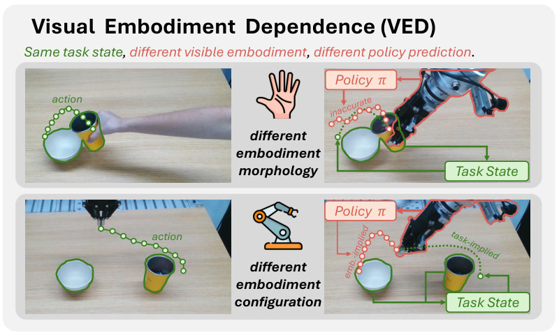
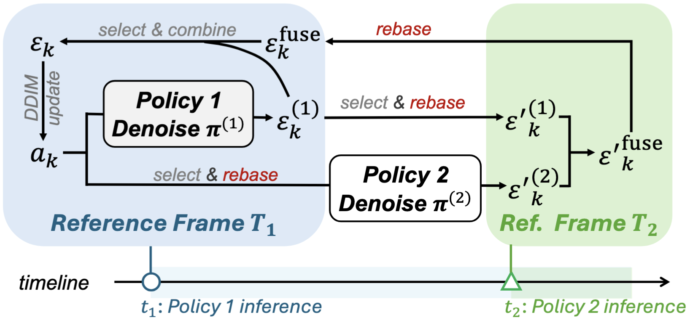

Zihao He 何子浩
I am a Ph.D. student at University of Maryland, advised by Prof. Hao-Shu Fang and I also collaborate closely with Prof. Ruoshi Liu. I received my B.Eng. degree from Shanghai Jiao Tong University, where I was a member of the Machine Vision and Intelligence Group (MVIG) under the supervision of Prof. Hao-Shu Fang and Prof. Cewu Lu. I was also a visiting research intern at UC San Diego, working with Prof. Hao Su.
My research interests mainly lie in dexterous manipulation, tactile sensing, and cross-embodiment learning with the ultimate goal of building intelligent robots with human-level manipulation dexterity.
Email / Google Scholar / X / Github / LinkedIn
News
Show more |
Research* denotes equal contribution. † denotes corresponding author(s). |
|
 |
Hongjie Fang, Yuxuan Lu, Chenxi Wang, Haoxiang Qin, Shirun Tang, Zihao He, Shangning Xia, Jingjing Chen, Wanxi Liu, Shiquan Wang†, Cewu Lu† arXiv, 2026 paper / project page Visuomotor policies can use a robot's visible configuration as a shortcut. A shared 3D representation supports human-to-robot transfer, and data augmentation improves robustness to unseen robot configurations. |
|
 |
Zihao He*, Hongjie Fang*, Shirun Tang, Cewu Lu†, Hao-Shu Fang† arXiv, 2026 paper / project page / code / X MATE combines diffusion policies that run at different rates without retraining them. It fuses vision and force for contact-rich tasks and combines camera views for occluded pick-and-place. |
|
Hongjie Fang*, Shirun Tang*, Mingyu Mei*, Haoxiang Qin, Zihao He, Jingjing Chen, Ying Feng, Chenxi Wang, Wanxi Liu, Zaixing He, Cewu Lu, Shiquan Wang† RSS, 2026 paper / project page / code Force Policy learns an interaction frame from demonstrations to separate force and position control. It combines vision with fast local control to improve contact stability and force regulation. |
|
|
Zihao He*, Bo Ai*, Tongzhou Mu, Yulin Liu, Weikang Wan, Jiawei Fu, Yilun Du, Henrik I. Christensen†, Hao Su† IROS, 2026 paper / project page A shared world model represents hands and objects as 3D particles and transfers zero-shot across robot hands for plasticine reshaping. |
|
|
Ying Feng*, Hongjie Fang*, Yinong He*, Jingjing Chen, Chenxi Wang, Zihao He, Ruonan Liu, Cewu Lu† ICRA, 2026 paper / project page / code DQ-RISE represents hand poses with a compact set of discrete states. This simplifies motion prediction and lets a diffusion policy learn to coordinate arm and hand movements. |
|

|
Hongjie Fang*, Chenxi Wang*, Yiming Wang*, Jingjing Chen*, Shangning Xia, Jun Lv, Zihao He, Xiyan Yi, Yunhan Guo, Xinyu Zhan, Lixin Yang, Weiming Wang, Cewu Lu†, Hao-Shu Fang† CoRL, 2025 paper / project page / data collection code / policy code AirExo-2 uses a low-cost exoskeleton to collect real-world demonstrations. In experiments, RISE-2 learns from these demonstrations and matches or exceeds policies trained on teleoperated robot data. |

|
Zihao He*, Hongjie Fang*, Jingjing Chen, Hao-Shu Fang†, Cewu Lu† RA-L, 2025 IROS, 2025 paper / project page / code / X FoAR combines vision with force and torque sensing for contact-rich manipulation. By predicting contact, it adjusts how much it relies on force and torque as the task progresses. |
Experience
-
University of Maryland, College Park
Ph.D. Student in Computer Science
-
UC San Diego
Visiting Research Intern
-
Shanghai Jiao Tong University
B.Eng. in Electrical and Computer Engineering
Teaching
-
Algorithms (CMSC351) Fall 2026Teaching Assistant, University of Maryland
-
Programming and Elementary Data Structures (ECE2800J) Spring 2024Teaching Assistant, Shanghai Jiao Tong University
Academic Services
Conference Review
- IEEE International Conference on Robotics and Automation (ICRA 2027)
- IEEE/RSJ International Conference on Intelligent Robots and Systems (IROS 2026)
- Conference on Robot Learning (CoRL 2026)
Journal Review
- IEEE Robotics and Automation Letters (RA-L)
- IEEE Transactions on Robotics (T-RO)
Selected Awards and Honors |
|
|
The website is built upon this template. |